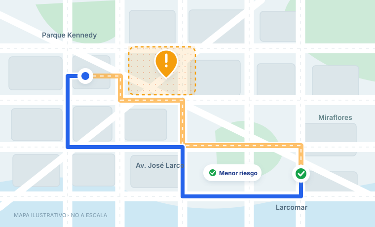

Ingresa tu destino
Indica a donde quieres ir y desde que punto iniciaras el recorrido
"Moverte con confianza empieza aquí
"Explora alternativas para llegar a tu destino, identifica zonas de riesgo y toma decisiones con mayor información en Lima Metropolitana."
Explorar el mapa
FÁCIL DE UTILIZAR
De tu punto de partida al destino, en cuatro pasoss sencillos
Indica a donde quieres ir y desde que punto iniciaras el recorrido
Elige la seguridad, el tiempo o la distancia como criterio principal.
Revisa alternativas e identifica iluminación, incidentes y puntos de apoyo
Sigue la ruta elegida y consulta los avisos relacionados con el trayecto.
Herramietnas para desplazarte con mas contexto y menos incertidumbre
Compara trayectos considerando zonas de riesgo, iluminación y lugares de apoyo.
Planificacion de rutasConsulta información contextual de tu recorrido. La demo utiliza datos simulados.
Contexto de la zonaVisualiza avisos de ejemplo sobre incidentes y cambios relevantes cerca de tu ruta
Prevención y orientaciónConoce cómo los reportes ciudadanos pueden aportar información para otros usuarios.
Reportes colaborativos